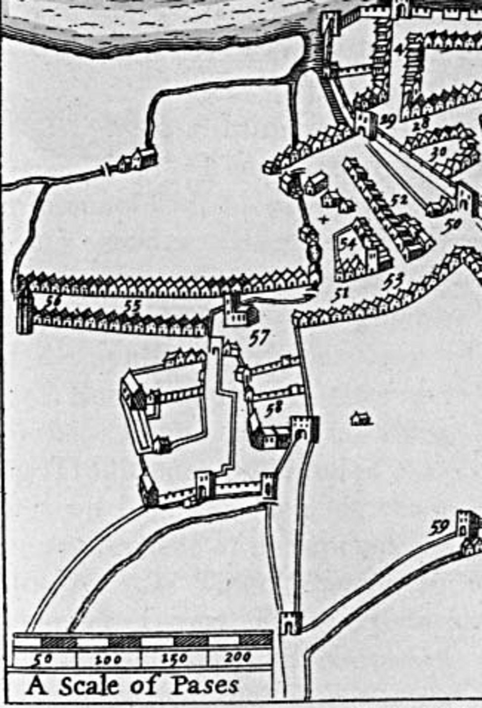

Stop 9 of 18 · Sundrive Road, Kimmage
The Stone Boat
The medieval stone that splits the river two to one.
The Stone Boat
Just east of Sundrive Road, a stone shaped like the bow of a boat divides the river. The first was built in 1245, when the Norman city of Dublin was short of water. It was rebuilt in 1555, and the stone you see today is a modern replacement on the same design.
The canons of St Thomas’s Abbey carried out extensive works to bring water to their abbey and the city. These works took water from the Dodder at Balrothery to Kimmage, where it joined the Poddle. Here the stone tongue, known locally as the Stone Boat, split the flow two to one: two thirds stayed in the Poddle, and one third went into the City Watercourse.
St Thomas’s Abbey
The City Watercourse, an artificial channel, carried its third of the water north-west towards Dolphin’s Barn. Near today’s Basin Lane it turned east along the south side of James’s Street and through Thomas Street into the city.
The Augustinian Abbey of St Thomas the Martyr lay outside the medieval walls, in the western suburbs just off modern Thomas Street. It was founded in 1177 by William FitzAldelm, custos of Ireland, on behalf of King Henry II, and followed the Victorine rule, like St Augustine’s Abbey in Bristol, so its first canons probably came from Bristol. No trace of the abbey survives.
Larkfield Mill and the Kimmage Garrison
Larkfield Mill stood where Sundrive Shopping Centre is now. In 1816 it was a skin mill; in the 1880s William Danford ran a corn mill there; later it was Larkfield Roller Mills, run by Harron, Connolly and Co.; and by the 1930s it housed St Kevin’s Paint Works.
Before the 1916 Rising the lease was held by Countess Plunkett, wife of Count George Noble Plunkett: twenty acres, some cottages, a barn and the mill, by then idle. Her sons, among them Joseph Mary Plunkett, used it as a base. Arms from the Howth gun-running of 1914 passed through it, and in the months before the Rising about 90 Irish Volunteers who had come over from Britain lived and trained there, making munitions. They became known as the Kimmage Garrison. Patrick Pearse spoke to them the week before the Rising.
Tonguefield
The wedge-shaped stone that splits the river gave its name to the Tongue Fields and the Tonguefield housing around them, and in turn to the Stone Boat pub nearby. A newspaper correspondent once remembered a button factory in the Tongue Fields, driven by the river.
Finola Watchorn traces the two branches from here. The artificial branch, with a third of the water, went north to Dolphin’s Barn and was carried on a raised bank, remembered as the Back of the Pipes, to the City Basin near James’s Street. The old course carried on through the grounds of Mount Argus and Loader’s Park Mills, along Kimmage Road Lower, under the front gardens of some of its houses, and down Harold’s Cross Road to the canal, then on by Clanbrassil Street, Blackpitts, New Row and Patrick Street.
Source: Finola Watchorn, Crumlin and the Way it Was.
From the planning file
Facts from the flood scheme’s planning application and four local planning files.
Poddle People
- The Plunketts: Larkfield and the Kimmage Garrison
Meander off the walk
A detour from this stop, off the main line of the river.
- Dolphin’s Barn and the City Watercourse: Follow the third of the water that left at the Stone Boat, past Shaw’s mill and the Back of the Pipes to the City Basin.
Parts of this page draw on research by the volunteers of the Crumlin and Walkinstown History Group, shared with poddle.ie. About their research.

